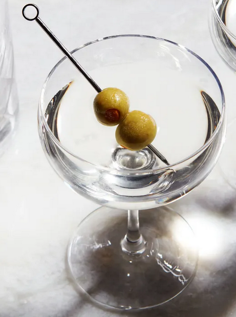

Martini

Description
At its root, a martini is simple, which makes it one of the very best cocktails to practice making for yourself at home. But more than any other cocktail, the martini is a drink you customize; you need to dial it in to your own taste.
Ingredients
- 60ml vodka or gin
- 1 tbsp dry vermouth
- olive or lemon peel, to garnish
Steps
- Stir the gin or vodka, dry vermouth and a little ice together or put them in a cocktail shaker to combine.
- Strain into a chilled martini glass. Serve with an olive on a cocktail stick or a twist of lemon peel.